00이 매뉴얼에 대하여
간이스프링클러설비 펌프 용량 계산서는 간이스프링클러설비의 기준 헤드 수 · 방수시간 · 수원, 펌프 토출량 · 전양정, 전동기 동력과 배관 사용압력 · 유속 판정을 한 화면에서 산정해 A4 계산서로 정리하는 도구입니다. 근거는 간이스프링클러설비의 화재안전성능기준(NFPC 103A) 소방청고시 제2025-25호(2026. 3. 1. 시행), 간이스프링클러설비의 화재안전기술기준(NFTC 103A) 국립소방연구원공고 제2024-58호(2024. 12. 1. 시행), 소방시설 설치 및 관리에 관한 법률 시행령 별표 4 제1호마목입니다.
| 항목 | 내용 |
|---|---|
| 대상 프로그램 | 간이스프링클러설비 펌프 용량 계산서 MANMIN Ver-5.1(v5.1.0) — 탭 막대 「📘 매뉴얼」 버튼으로 이 문서가 열립니다 |
| 접속 주소 | manminkim-eng.github.io/simple-sprinkler-calc |
| 매뉴얼 판 | Ver-5.1 (화면 표기와 같은 판 번호, 초판) · 2026-10-16 · 작성 김만민 건축사(㈜대성건축사사무소) |
| 내려받기 | PDF(A4) · 간이스프링클러설비 펌프 용량 계산서 열기 |
| 예제 | 본문 그림은 예제 A(익산 근린생활시설 — 바닥면적 800㎡ · 일반 2개 × 10분)로 캡처했습니다 — 토출량 100 L/min · 수원 1.000 m³ · 전양정 27 m · 3 HP. 예제 B(근린생활 1천㎡ 이상 — 5개 × 20분) · C(부설 주차장 — 80 L/min)는 부록 A2 |
| 근거 법령 | 간이스프링클러설비의 화재안전성능기준(NFPC 103A) 소방청고시 제2025-25호(2026. 3. 1. 시행), 간이스프링클러설비의 화재안전기술기준(NFTC 103A) 국립소방연구원공고 제2024-58호(2024. 12. 1. 시행), 소방시설 설치 및 관리에 관한 법률 시행령 별표 4 제1호마목 — LawMCP(국가법령정보센터) 원문 대조(2026-10-16) |
| 범위 | 펌프 방식 가압송수장치 — 상수도직결형 · 캐비닛형 · 주택전용(연립 · 다세대)은 펌프 계산 대상이 아니며, 고가수조 · 압력수조 · 가압수조는 식만 안내합니다 |
01한눈에 보기
설치 없이 브라우저에서 바로 실행되는 단일 페이지 앱(PWA)입니다. 입력한 내용은 브라우저 안에서만 계산되며 서버로 전송되지 않습니다.
무엇을 산정하나
기준 헤드 수 · 방수시간 · 펌프 토출량 · 수원 · 전양정 · 전동기 동력(kW · HP)
설비 방식 안내
5개 · 20분 대상은 상수도직결형 · 캐비닛형을 뺀 가압송수장치, 연립 · 다세대는 주택전용
배관 · 유속 판정
토출압력 1.2 MPa 이상이면 KS D 3562 · 3583, 구간마다 가지 6 · 교차·주 10 m/s
1-1. 화면 구성
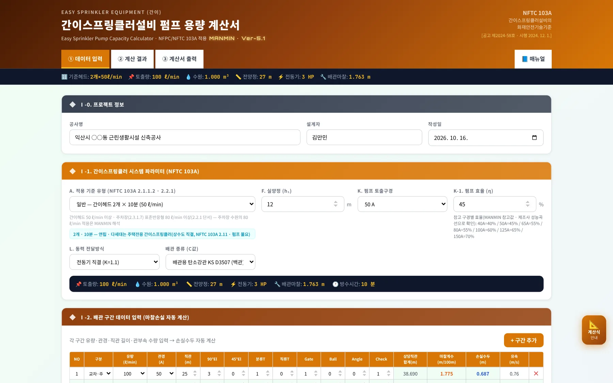
12345- 1작업 탭 · 매뉴얼
- 2요약 바
- 3프로젝트 정보
- 4시스템 파라미터
- 5계산식 안내
| 영역 | 내용 |
|---|---|
| 헤더 · 탭 | 「① 데이터 입력」 → 「② 계산 결과」 → 「③ 계산서 출력」, 오른쪽 끝 「📘 매뉴얼」 |
| 요약 바 | 어느 탭에 있든 기준 헤드 · 토출량 · 수원 · 전양정 · 전동기 · 배관 마찰을 한 줄로 보여 줍니다 |
| Ⅰ-0 · Ⅰ-1 · Ⅰ-2 | 프로젝트 정보 → 시스템 파라미터 → 배관 구간 — 값을 바꾸면 즉시 다시 계산됩니다 |
| 계산식 안내 | 오른쪽 「📐 계산식」 — 이용방법 · 수원 · 토출량 · 펌프 양정 · 전동기 동력 · 상당직관 5개 탭 창 |
1-2. 작업 탭·근거 표시
- 1① 데이터 입력
- 2② 계산 결과
- 3③ 계산서 출력
- 4📘 매뉴얼
- 5근거 · 공고 · 시행일
헤더 오른쪽에는 적용 기준 NFTC 103A와 [공고 제2024-58호 · 시행 2024. 12. 1.]이 표시됩니다.
1-3. 설치·보관·매뉴얼
| 항목 | 내용 |
|---|---|
| 설치 | 브라우저 「홈 화면에 추가」 또는 설치 안내 — 설치하면 오프라인에서도 열립니다(앱 본체만 — 매뉴얼은 온라인 전용) |
| 보관 | 계산 결과는 A4 계산서(인쇄 · PDF · JPG)로 남깁니다. 앱은 입력값을 서버에 저장하지 않습니다 |
| 매뉴얼 | 탭 막대 오른쪽 「📘 매뉴얼」 — 이 문서(HTML)와 PDF(A4) |
021분 따라하기
예제 A — 익산 근린생활시설(바닥면적 합계 800㎡)입니다. 아래 순서대로 넣으면 토출량 100 L/min · 전양정 27 m · 전동기 3 HP가 나옵니다.
- ① 프로젝트 정보공사명 「익산시 ○○동 근린생활시설 신축공사」, 설계자, 작성일 — A4 계산서 표제에 들어갑니다(3-1).
- ② 기준 유형「일반 — 간이헤드 2개 × 10분 (50 ℓ/min)」 — 바닥면적 합계가 1천㎡ 미만이라 5개 대상이 아닙니다(4-2).
- ③ 양정 · 펌프 조건실양정 12 m · 50A · 효율 45 % · 전동기 직결 · KS D 3507(3-2).
- ④ 배관 구간교차·주 50A 100 L/min 25 m · 40A 10 m · 가지 32A 50 L/min 8 m와 관부속 수량 → 마찰손실 1.763 m(3-3).
- ⑤ 결과 확인2 × 50 = 100 L/min · 2 × 50 × 10 ÷ 1,000 = 1.000 m³ · (12 + 1.763 + 10) × 1.1 = 26.139 → 27 m · 1.076 kW → 3 HP · 토출압력 0.265 MPa(3-4 · 3-5).
- ⑥ A4 계산서「③ 계산서 출력」에서 「🖨️ 인쇄 · PDF」 또는 「🖼️ JPG 저장」(3-10).
| 항목 | 예제 A |
|---|---|
| 기준 유형 | 일반 — 간이헤드 2개 × 10분(NFPC 103A 제4조①2호 · NFTC 103A 2.1.1.2) |
| 펌프 토출량 | 2 × 50 = 100 L/min(2.2.1 · 50 L/min 이상의 계산값) |
| 수원 | 2 × 50 × 10 ÷ 1,000 = 1.000 m³ |
| 배관 마찰손실 | 1.763 m(구간별 유속 0.76, 1.23, 0.83 m/s — 기준 이내) |
| 전양정 | 26.139 → 27 m(안전율 10 % · 올림 — MANMIN 참고값) |
| 전동기 | 1.076 kW = 1.443 HP → 3 HP |
| 배관 판정 | 토출압력 0.265 MPa — 1.2 MPa 미만 · KS D 3507 가능 |
03화면별 기능 상세
3-1. 프로젝트 정보
- 1공사명
- 2설계자
- 3작성일
공사명 · 설계자 · 작성일은 A4 계산서 머리에 그대로 들어갑니다.
3-2. 시스템 파라미터
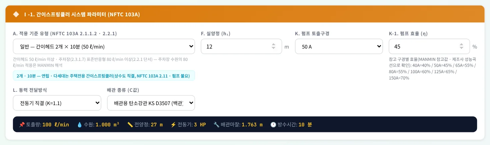
1234567- 1A. 기준 유형 — 2개 · 10분 / 5개 · 20분 · 주차장
- 2설비 방식 안내(2.2.7 · 2.11)
- 3실양정
- 4펌프 구경
- 5펌프 효율
- 6전달방식
- 7배관 종류(C값)
| 항목 | 설명 |
|---|---|
| A. 기준 유형 | 일반 2개 × 10분 · 마목2)가) · 6) · 8) 대상 5개 × 20분 · 주차장 표준반응형 80 L/min 2가지 — 헤드 수 · 방수량 · 방수시간이 정해집니다 |
| 설비 방식 안내 | 5개 대상은 상수도직결형 · 캐비닛형을 제외한 가압송수장치(2.2.7) · 비상전원 20분 · 일반은 연립 · 다세대 주택전용(2.11) 안내 |
| F. 실양정 | 펌프(수원 수면)에서 최고층 간이헤드까지의 높이(흡입 + 토출) |
| 펌프 구경 · 효율 · 전달방식 | 효율은 직접 입력(입력란 아래 구경별 참고값) · 전동기 직결 K 1.1 / 그 밖의 원동기 1.15 |
| 배관 종류 | KS D 3507(백관) · KS D 3562 Sch40(흑관) · STS(KS D 3576 · 3595) · CPVC(합성수지 — 설치장소 제한) — 내경과 C값이 바뀝니다(4-7). 토출압력 1.2 MPa 이상인데 KS D 3562 외를 고르면 ⚠ |
3-3. 배관 구간 입력
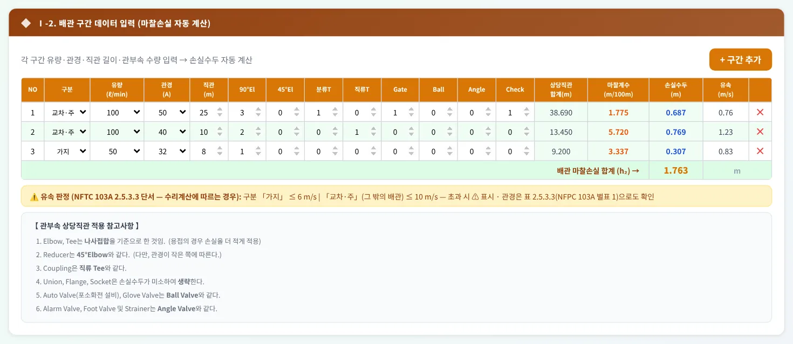
1234- 1구분 — 가지 / 교차·주
- 21구간 — 펌프 토출 50A
- 33구간 — 가지배관 32A
- 4＋ 구간 추가
구간마다 구분(가지 / 교차·주) · 유량 · 관경 · 직관 길이와 관부속 수량을 넣으면, 상당직관 = 직관 + Σ(수량 × 상당길이), 손실수두 = 마찰계수(m/100 m) × 상당직관 ÷ 100이 줄마다 계산되고 합계가 h₂가 됩니다. 유속은 「가지」 6 m/s · 「교차·주」 10 m/s를 넘으면 ⚠입니다 — NFTC 103A 2.5.3.3 단서의 수리계산에 따르는 경우 기준입니다. 관경을 표 2.5.3.3(NFPC 103A 별표 1 — 간이헤드 2개 25 mm · 3개 32 mm · 5개 40 mm · 10개 50 mm …)으로 정할 때도 함께 확인하십시오. 예제 A의 구간별 유속은 0.76, 1.23, 0.83 m/s입니다.
3-4. 수원 용량
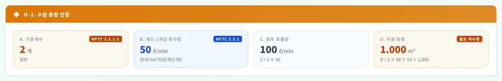
1234- 1A. 간이헤드 2개
- 2B. 50 L/min 이상
- 3C. 펌프 토출량
- 4D. 2 × 50 × 10 = 1 m³
C = A × B(헤드 수 × 방수량), D = A × B × T ÷ 1,000(T 방수시간)입니다. 예제 A: 2 × 50 = 100 L/min · 1.000 m³. 수조에는 자동급수장치를 1개 이상 둡니다(2.1.1.2).
3-5. 펌프 양정 · 배관 판정
- 1h₁ 실양정
- 2h₂ 배관 마찰손실
- 3h₃ 헤드 10 m
- 4안전율 10 %
- 5소계 · 안전율 · 전양정
- 6S 토출압력 — 배관 사용압력
- 7유속 판정 6 · 10 m/s
전양정 J = (h₁ 실양정 + h₂ 배관 마찰 + h₃ 헤드 10 m) × 1.1 → 올림입니다. 10 m는 간이헤드 선단 방수압력 0.1 MPa 이상(NFPC 103A 제5조① · NFTC 103A 2.2.1)의 환산수두이고, 간이스프링클러 기준에는 방수압 상한 규정이 없습니다. 안전율 10 %와 올림은 MANMIN 참고값입니다 — 고가수조 낙차 H = h₁ + 10 m(식 2.2.3.1) · 압력수조 P = p₁ + p₂ + 0.1 MPa(식 2.2.4.1)만 기준에 있습니다.
| 항목 | 내용 |
|---|---|
| S. 토출압력 환산 | J × 0.0098 = 0.265 MPa — 배관 사용압력이 1.2 MPa 이상이면 KS D 3562 · 3583(NFPC 103A 제8조①2호 · NFTC 103A 2.5.1.2) — 앱 선택지 중에는 KS D 3562만 「배관 적합」 |
| 유속 판정 | 구간별 가지 6 · 교차·주 10 m/s — 초과 구간 수를 카드로 표시(2.5.3.3 단서) |
3-6. 전동기 동력
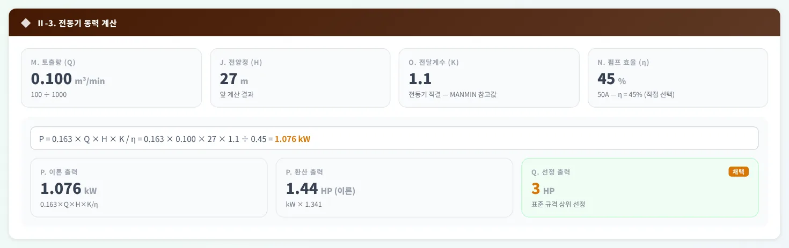
123456- 1Q 토출량
- 2H 전양정
- 3K 전달계수
- 4η 펌프 효율
- 5P 이론 출력
- 6표준 HP
P = 0.163 × Q(m³/min) × H(m) × K ÷ η [kW] — 0.163은 ρg ÷ 60,000(물 1,000 kg/m³ · 9.8 m/s²)입니다. 이론값을 HP(× 1.341)로 바꿔 3 · 5 · 7.5 · 10 … HP 표준 규격 중 바로 위 값을 고릅니다. 예제 A: 1.076 kW = 1.44 HP → 3 HP.
3-7. 사례 — 근린생활 1천㎡
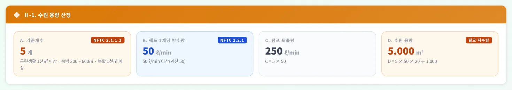
123- 15개 — 마목2)가) 대상
- 25 × 50 = 250 L/min
- 35 × 50 × 20 = 5 m³
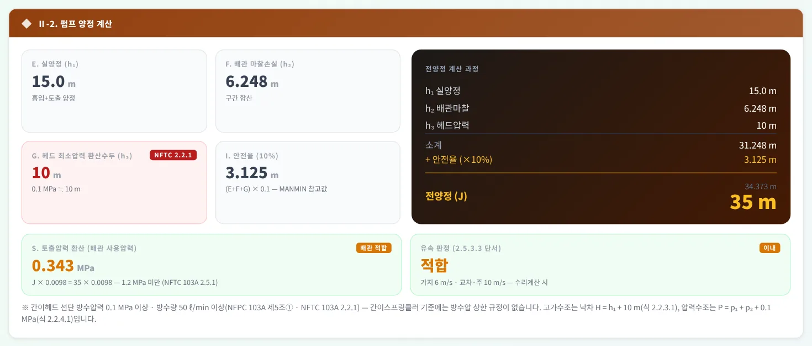
123- 1전양정
- 2토출압력
- 3방수압 · 수조 식
근린생활시설로 쓰는 바닥면적 합계가 1,200㎡로 1천㎡ 이상이라 시행령 별표 4 제1호마목2)가)에 해당합니다 — 간이헤드 5개 × 20분: 5 × 50 = 250 L/min · 수원 5.000 m³. 전양정 35 m · 5 HP. 이 대상은 상수도직결형 · 캐비닛형을 쓸 수 없고(2.2.7) 비상전원을 20분 이상 확보합니다(2.9.1.1).
3-8. 사례 — 부설 주차장
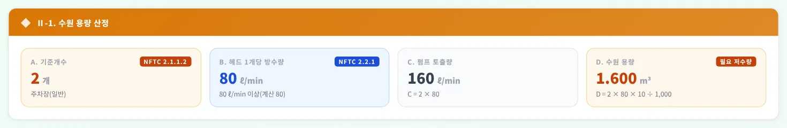
12- 1표준반응형 80 L/min
- 22 × 80 × 10 = 1.6 m³
- 1주차장(일반) 선택
- 2방식 안내
간이스프링클러설비가 설치되는 특정소방대상물에 부설된 주차장은 습식 외의 방식(2.3.1.7)으로 하고 표준반응형 스프링클러헤드(2.6.1.9 — NFTC 103 2.7 준용)를 쓰며, 헤드 1개 방수량은 80 L/min 이상(2.2.1 단서)입니다. 이 앱은 수원도 2 × 80 × 10 = 1.600 m³로 계산합니다(MANMIN 해석 — 기준 문언은 「간이헤드에서 … 방수할 수 있는 양」). 전양정 28 m · 3 HP.
3-9. 계산식 안내 창
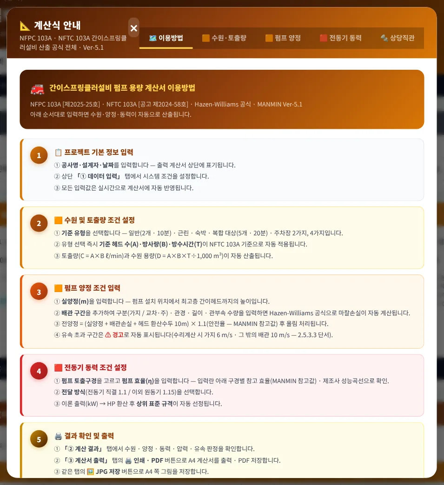
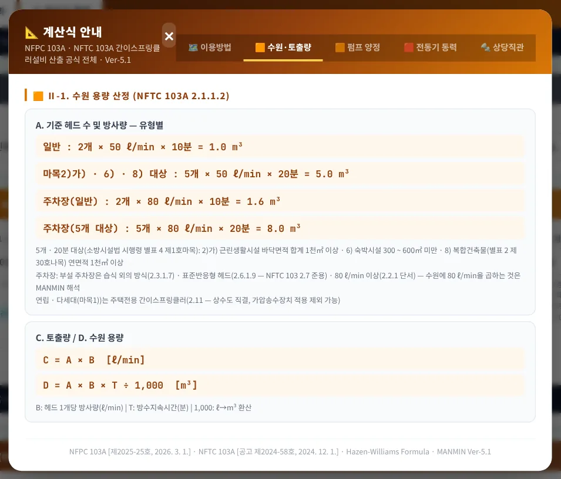
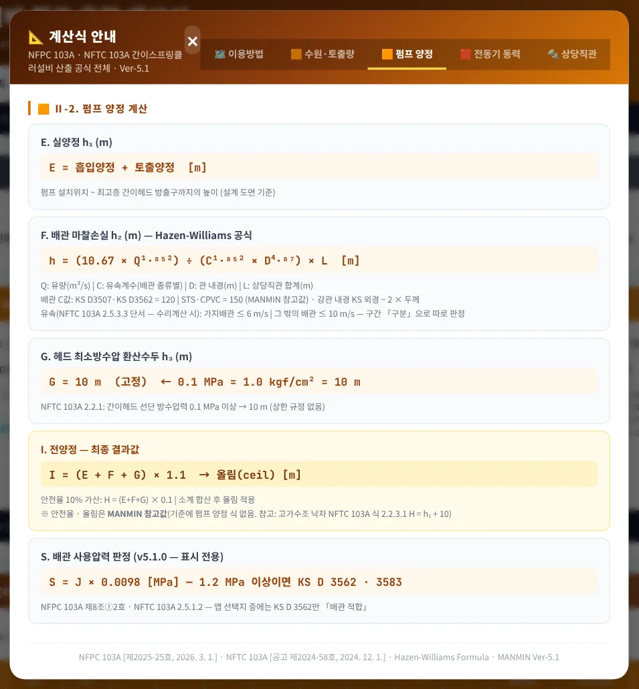
오른쪽 「📐 계산식」은 이용방법 · 수원 · 토출량 · 펌프 양정 · 전동기 동력 · 상당직관 5개 탭입니다. 식마다 근거 조문과 MANMIN 참고값 여부를 적어 두었습니다.
3-10. A4 계산서·출력
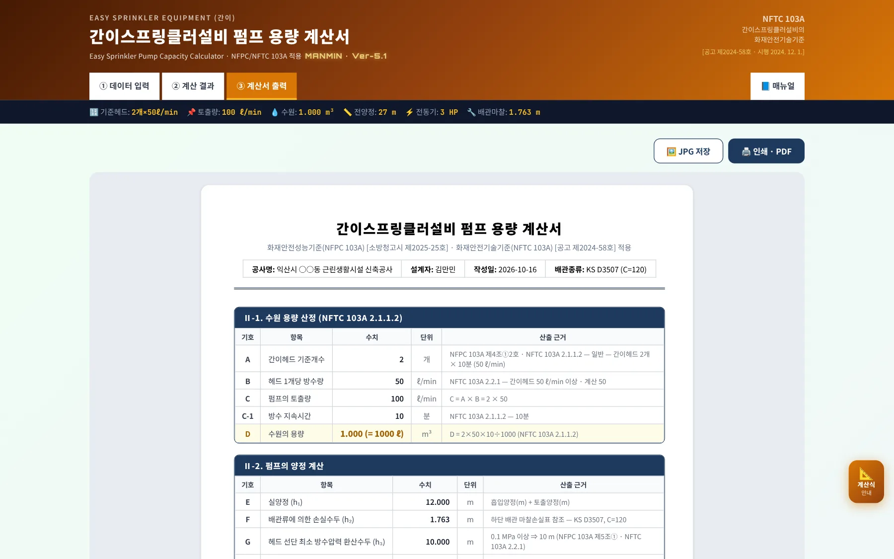
123- 1JPG 저장
- 2인쇄 · PDF
- 3A4 계산서
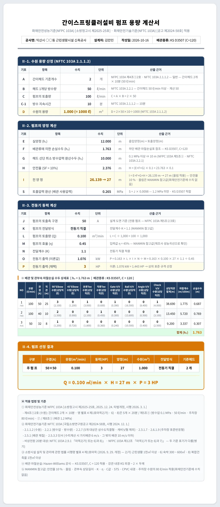
1234- 1Ⅱ-1 수원 — A ~ D
- 2Ⅱ-2 양정 — E ~ I
- 3S 배관 사용압력
- 4Ⅱ-3 동력 — J ~ P
계산서는 Ⅱ-1 수원(A ~ D) · Ⅱ-2 양정(E ~ I)과 배관 판정(S) · Ⅱ-3 동력(J ~ P) · 배관 마찰손실 상세표(구간 구분 포함) · Ⅱ-4 펌프 선정 결과 · 적용 법령 및 기준 순입니다. v5.0까지 「스프링클러설비」로 잘못 나오던 계산서 제목을 「간이스프링클러설비」로 바로잡았습니다.
3-11. 휴대전화 화면
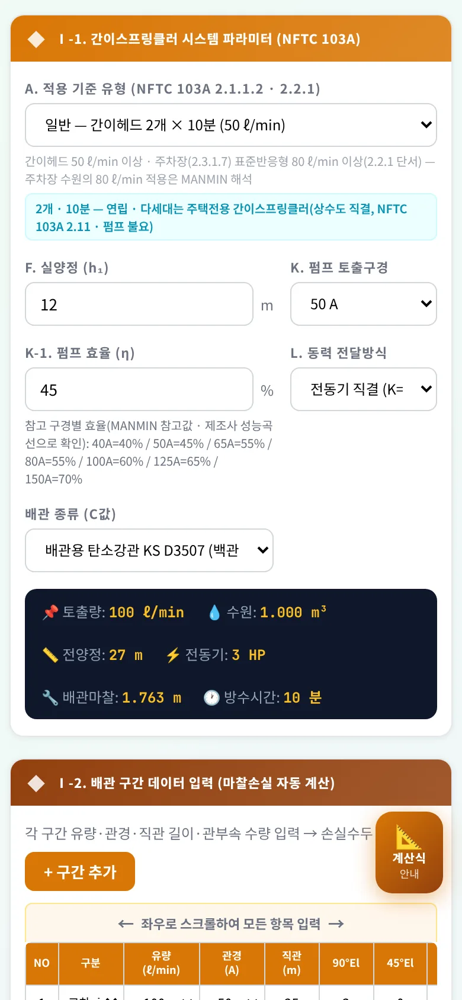
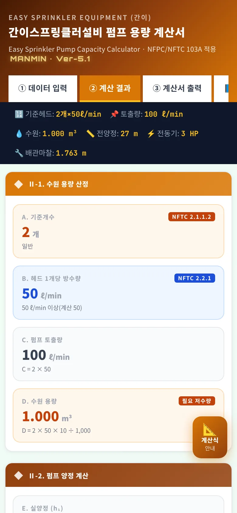
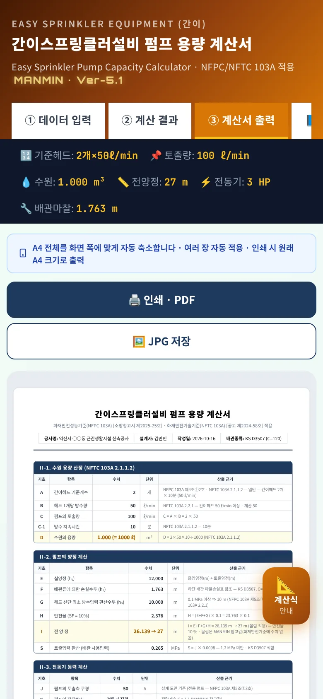
좁은 화면에서는 입력 칸이 쌓이고, 탭 막대는 좌우로 밀어서 봅니다(「📘 매뉴얼」은 오른쪽 끝). 배관 구간 표는 좌우로 밀어 입력합니다. A4 계산서는 화면 폭에 맞춰 축소해 보여 주며 인쇄 · JPG는 원본 A4 크기로 나옵니다.
04법령 해설
4-1. 근거 체계
| 기준 | 내용 |
|---|---|
| 소방시설법 시행령 별표 4 제1호마목 | 간이스프링클러설비 설치 대상 1) ~ 8) — 2026. 9. 29. 개정 · 다중이용업소법 제9조 대상 포함(NFPC 103A 제2조) |
| NFPC 103A (성능기준 · 고시) | 제4조 수원 · 제5조 가압송수장치 · 제8조 배관 · 제12조 비상전원 · 제14조 주택전용 — 소방청고시 제2025-25호(2025. 12. 24. 타법개정, 2026. 3. 1. 시행) · 마지막 일부개정 제2024-3호(2024. 12. 1.) |
| NFTC 103A (기술기준 · 공고) | 2.1 수원 · 2.2 가압송수장치 · 2.3 방호구역 · 2.5 배관 · 2.6 간이헤드 · 2.9 비상전원 · 2.11 주택전용 — 국립소방연구원공고 제2024-58호(2024. 12. 1. 시행) |
| 경과조치 | NFPC 103A 부칙 — 시행 전 건축허가 등을 신청 · 신고했거나 착공신고한 대상은 종전 기준, 개정 기준이 유리하면 그에 따를 수 있음 |
LawMCP(국가법령정보센터) 원문 대조 2026-10-16 · NFTC 103A 표 2.5.3.3은 이미지 표 — NFPC 103A 별표 1(텍스트)로 확인
4-2. 설치 대상 · 기준 유형
| 구분 | 대상 |
|---|---|
| 마목1) | 연립주택 · 다세대주택 — 주택전용 간이스프링클러설비(상수도 직결 · NFTC 103A 2.11) |
| 마목2) | 근린생활시설 — 가) 바닥면적 합계 1천㎡ 이상 모든 층 · 나) 입원실 · 인공신장실 있는 의원 등 · 다) 조산원 · 산후조리원 600㎡ 미만 |
| 마목3) · 4) · 5) | 의료시설(600㎡ 미만 등) · 교육연구시설 합숙소 100㎡ 이상 · 노유자 시설(생활시설 · 300 ~ 600㎡ 등) |
| 마목6) · 7) · 8) | 숙박시설 300 ~ 600㎡ 미만 · 임차 건물의 출입국관리법 보호시설 · 복합건축물(별표 2 제30호나목) 연면적 1천㎡ 이상 모든 층 |
| 5개 · 20분 | 마목2)가) · 6) · 8) — 수원 · 방수압 · 수조 유지시간(NFTC 103A 2.1.1.2 · 2.2.1 · 2.2.3 ~ 2.2.5) |
4-3. 수원
| 구분 | 기준 |
|---|---|
| 일반 | 2 × 50 L/min × 10분 = 1.0 m³ |
| 5개 대상 | 5 × 50 L/min × 20분 = 5.0 m³ |
| 주차장 | 표준반응형 80 L/min 적용 시 2 × 80 × 10 = 1.6 m³ · 5 × 80 × 20 = 8.0 m³ — MANMIN 해석 |
| 수조 | 자동급수장치 1개 이상 · 소화설비 전용(제4조②) · 겸용 시 유효수량 · 저수량 합산(제13조) |
4-4. 가압송수장치 · 설비 방식
| 항목 | 기준 |
|---|---|
| 방수압 · 방수량 | 가장 먼 가지배관에서 2개(5개 대상은 5개) 동시 개방 시 각 간이헤드 선단 0.1 MPa 이상 · 50 L/min 이상 · 주차장 표준반응형 80 L/min 이상(제5조① · 2.2.1) |
| 펌프 | 전용(제5조②3호) · 체절 140 % 이하 · 150 % 유량 65 % 이상 · 성능시험배관(5호) · 충압펌프 토출압 = 최고위 살수장치 자연압 + 0.2 MPa 이상(2.2.2.8.1) |
| 고가 · 압력 · 가압수조 | H = h₁ + 10 m(식 2.2.3.1) · P = p₁ + p₂ + 0.1 MPa(식 2.2.4.1) · 가압수조 10분(5개 대상 20분) 유지(2.2.5.1) |
| 설비 방식 제한 | 마목2)가) · 6) · 8) 대상은 상수도직결형 · 캐비닛형을 제외한 가압송수장치(제5조⑦ · 2.2.7) · 연립 · 다세대는 주택전용 — 가압송수장치 등 적용 제외 가능(제14조 · 2.11) |
4-5. 배관 · 유속
| 항목 | 기준 |
|---|---|
| 배관 재질 · 사용압력 | 1.2 MPa 미만: KS D 3507 · 5301(습식) · 3576 · 3595 · 4311 / 1.2 MPa 이상: KS D 3562 · 3583(제8조① · 2.5.1) — 앱 S 항목 |
| 합성수지배관 | 화재 등으로 배관 성능에 영향을 받을 우려가 적은 장소(제8조②) · 주택전용은 세대 내 합성수지배관 가능(제14조3호) |
| 관경 · 유속 | 수리계산 또는 별표 1(표 2.5.3.3) — 수리계산 시 가지배관 6 m/s · 그 밖의 배관 10 m/s 이하(2.5.3.3 단서) · 상수도직결형 수도배관 32 mm 이상(2.5.3.1) |
| 가지배관 | 토너먼트 방식 금지 · 한쪽 가지배관 간이헤드 8개 이하(제8조⑨) |
| 방호구역 | 바닥면적 1,000㎡ 이하 · 2개 층에 미치지 않음(제6조) · 부설 주차장은 습식 외의 방식(2.3.1.7) |
4-6. 비상전원 — 두 기준 표기
| 구분 | 문구 |
|---|---|
| NFTC 103A 2.9.1 · 2.9.1.1 | 10분[영 별표 4 제1호마목2)가) 또는 6)과 8)에 해당하는 경우에는 20분] 이상 — 수원 · 방수압 조항과 같은 대상 |
| NFPC 103A 제12조 | 10분[영 별표 4 제1호마목1)가 또는 6)과 7)에 해당하는 경우에는 20분] 이상 — 현행 시행령 마목1)에는 세목 가)가 없음 |
| 정리 | 두 기준의 대상 표기가 다릅니다. 앱은 계산에 쓰지 않고 A4 · 매뉴얼에 두 문구를 함께 적었습니다 — 20분 비상전원 대상은 관할 소방서와 협의해 확인하십시오(NFPC 인용 오기 가능성 — 단정하지 않음) |
4-7. 마찰손실·강관 내경
| 호칭 | KS D 3507 (백관) | KS D 3562 Sch40 (흑관) | STS (참고) | CPVC (참고) |
|---|---|---|---|---|
| 25A | 27.6 | 27.2 | 27.6 | 26.6 |
| 32A | 35.7 | 35.5 | 36.8 | 35.1 |
| 40A | 41.6 | 41.2 | 42.8 | 40.9 |
| 50A | 52.9 | 52.7 | 54.8 | 52.5 |
| 65A | 67.9 | 65.9 | 70.0 | 62.7 |
| 80A | 80.7 | 78.1 | 85.0 | 79.4 |
| 100A | 105.3 | 102.3 | 108.2 | 101.6 |
강관 내경(mm)은 KS 외경 − 2 × 두께로 계산한 값입니다(v5.1.0 — 옥내 · 옥외소화전 · 스프링클러와 같은 표). STS · CPVC 내경은 제품마다 달라 MANMIN 참고값입니다.
4-8. MANMIN 참고값
| 항목 | 내용 |
|---|---|
| 펌프 전양정 안전율 · 올림 | (h₁ + h₂ + 10) × 1.1 → 올림 — 화재안전기준에 펌프 양정 식 · 안전율 수치 없음 |
| 주차장 수원 | 표준반응형 80 L/min × 헤드 수 × 방수시간 — 기준 문언은 「간이헤드에서 … 방수할 수 있는 양」이어서 해석 |
| 관부속 상당직관 길이 | 90° · 45° 엘보 · 분류 · 직류 티 · 게이트 · 볼 · 앵글 · 체크 밸브 — 관경별 표(나사 접합 기준) |
| 전달계수 · 효율 | K 전동기 직결 1.1 · 그 밖 1.15 · 효율은 사용자 입력 — 제조사 성능곡선으로 확인 |
4-9. v5.1.0 정정 (2026-10-16)
| 항목 | 기존 | 정정 |
|---|---|---|
| 판 번호 | 「NFTC 103A [소방청고시 제2025-25호]」 | NFTC 103A 공고 제2024-58호(2024. 12. 1.) · NFPC 103A 고시 제2025-25호(2026. 3. 1.) |
| 주차장 근거 | 「NFTC 103(스프링클러) §2.3.1.7 준용」 | NFTC 103A 2.3.1.7 · 2.6.1.9 · 2.2.1 단서 |
| 5개 · 20분 대상 | 「영 별표4 제1호마목 2가 또는 6·8」 | 2)가) 근린생활 1천㎡ · 6) 숙박 300 ~ 600㎡ · 8) 복합 1천㎡ |
| 강관 내경 | KS D 3507 40A 42.1 · KS D 3562 25A 26.6 mm 등 17개 | KS 외경 − 2 × 두께(3507 40A 41.6 · 3562 25A 27.2 mm) |
| 배관 판정 · 방식 안내 | 없음 | 1.2 MPa 배관 재질 · 5개 대상 가압송수장치 · 주택전용 안내 |
| 유속 판정 | 모두 「가지배관 초과」 · 「유속 제한」 | 구간별 가지 / 교차·주 · 「수리계산 시(단서)」 |
| 계산서 · 표기 | 제목 「스프링클러설비」 · η가 「Η」로 보임 | 「간이스프링클러설비」 · 대문자 변환 해제 · 참고값 표기 |
| 엔진 | 계산이 화면 컴포넌트 안 | ssp-engine sspCalc 단일화 — 독립 구현 50,000건 대조 불일치 0 |
05실무 작업 방법
5-1. 단계별 절차
| 단계 | 내용 |
|---|---|
| ① 설치 대상 · 유형 | 시행령 별표 4 제1호마목 1) ~ 8) 확인 · 5개 · 20분 대상 여부(2)가) · 6) · 8)) · 다중이용업소 · 주택전용 여부 |
| ② 설비 방식 | 펌프 · 고가수조 · 압력수조 · 가압수조 · 캐비닛형 · 상수도직결형 — 5개 대상은 상수도직결형 · 캐비닛형 제외 |
| ③ 배관 경로 | 펌프 → 주배관 → 교차배관 → 가장 먼 가지배관 · 「가지 / 교차·주」 구분 · 관부속 수량 · 별표 1 관경 확인 |
| ④ 전양정 · 동력 · 판정 | 실양정 · 마찰손실 · 10 m → 전양정 · 동력 · 표준 HP · 1.2 MPa 배관 · 유속 |
| ⑤ 기록 | A4 계산서를 PDF · JPG로 남겨 소방설계도서 · 착공신고 서류에 첨부 |
5-2. 설계 · 승인 전 확인
| 항목 | 확인 |
|---|---|
| 기준 시점 | 건축허가 등 신청일 · 착공신고일에 따라 종전 기준 적용 여부(경과조치) · 시행령 별표 4 개정(2026. 9. 29.) |
| 펌프 선정 | 정격점 · 체절 140 % · 150 % 유량 65 % — 제조사 성능곡선으로 확인 |
| 비상전원 | 10분 / 20분 대상 — NFPC · NFTC 표기 차이(4-6) 관할 소방서 협의 |
| 참고값 | 관부속 상당길이 · 효율 · 안전율은 사용 제품 · 사무소 기준으로 바꿔 넣기 |
06문제 해결·FAQ
| 증상 | 해결 |
|---|---|
| 예전 「특수형」은 어디로 갔나요 | 「근린생활 1천㎡ 이상 · 숙박 300 ~ 600㎡ · 복합 1천㎡ 이상 — 5개 × 20분」으로 이름을 바꿨습니다. 특수가연물 기준이 아니라 시행령 별표 4 제1호마목2)가) · 6) · 8) 대상입니다 |
| 연립 · 다세대는 어떻게 하나요 | 주택전용 간이스프링클러(상수도 직결 · NFTC 103A 2.11)로 펌프가 없을 수 있습니다 — 이 앱의 펌프 계산은 참고용입니다 |
| 「배관 부적합」이 떠요 | 토출압력 1.2 MPa 이상이면 KS D 3562 · 3583으로 바꾸십시오 — 계산값은 그대로입니다 |
| 유속 ⚠가 떠요 | 그 구간의 「구분」이 맞는지(가지 6 · 교차·주 10 m/s) 확인하고 관경을 키우십시오 |
| 화면이 예전 판이에요 | 새로 고침(Ctrl+F5) 또는 앱을 닫았다 다시 여십시오 |
부록
A1. 예제 입력값
| 예제 | 조건 | 배관 구간 |
|---|---|---|
| 예제 A | 일반 — 간이헤드 2개 × 10분 (50 ℓ/min) · 실양정 12 m · KS D3507 · 50A · η 45 % | 교차·주 50A 100L/min 25 m · 교차·주 40A 100L/min 10 m · 가지 32A 50L/min 8 m |
| 예제 B | 근린생활 1천㎡ 이상 · 숙박 300 ~ 600㎡ · 복합 1천㎡ 이상 — 간이헤드 5개 × 20분 (영 별표 4 제1호마목2)가) · 6) · 8)) · 실양정 15 m · KS D3507 · 65A · η 55 % | 교차·주 65A 250L/min 30 m · 교차·주 50A 250L/min 15 m · 가지 32A 150L/min 8 m · 가지 25A 50L/min 4 m |
| 예제 C | 주차장(일반) — 표준반응형 2개 × 10분 (80 ℓ/min) · 실양정 6 m · KS D3507 · 50A · η 45 % | 교차·주 50A 160L/min 30 m · 가지 25A 160L/min 6 m |
A2. 예제 결과
| 예제 | 헤드 수 | 방수량(L/min) | 시간(분) | 토출량(L/min) | 수원(m³) |
|---|---|---|---|---|---|
| 예제 A | 2 | 50 | 10 | 100 | 1.000 |
| 예제 B | 5 | 50 | 20 | 250 | 5.000 |
| 예제 C | 2 | 80 | 10 | 160 | 1.600 |
| 예제 | h₂(m) | 전양정(m) | HP | 토출압(MPa) |
|---|---|---|---|---|
| 예제 A | 1.763 | 27 | 3 | 0.265 |
| 예제 B | 6.248 | 35 | 5 | 0.343 |
| 예제 C | 8.803 | 28 | 3 | 0.275 |
A3. 버전 변경 내역
| 버전 | 내용 |
|---|---|
| Ver-5.1 · v5.1.0 (2026-10-16) | NFPC 103A(제2025-25호) · NFTC 103A(제2024-58호) · 시행령 별표 4 원문 대조 근거 정정, KS 강관 내경, 배관 압력 판정, 설비 방식 안내, 구간별 유속 판정, 비상전원 대상 두 기준 병기, MANMIN 참고값 표기, 계산 엔진 단일화, 「📘 매뉴얼」 · 사용자 매뉴얼(4-9) |
| Ver-5.0 (2026-09) | MANMIN 디자인 통일(헤더 · 탭 · 요약 바 · A4 · JPG 저장), PWA |
A4. 용어
| 용어 | 뜻 |
|---|---|
| 간이헤드 | 폐쇄형스프링클러헤드의 일종으로 간이스프링클러설비 대상에 맞는 감도 · 방수량 · 살수분포를 갖는 헤드(NFPC 103A 제3조1호) |
| 캐비닛형 | 가압송수장치 · 수조 · 유수검지장치 등을 캐비닛 형태로 집적한 간이 설비(제3조19호) |
| 상수도직결형 | 수조 없이 상수도에 직접 연결해 기준 방수압 · 방수량을 확보하는 설비(제3조20호) |
| 주택전용 | 연립 · 다세대에 설치하는 간이스프링클러설비(제3조23호 · 제14조) |
| 전양정 · 상당직관 | 펌프가 내야 하는 전체 수두 · 관부속 손실을 같은 지름 직관 길이로 바꾼 값 |